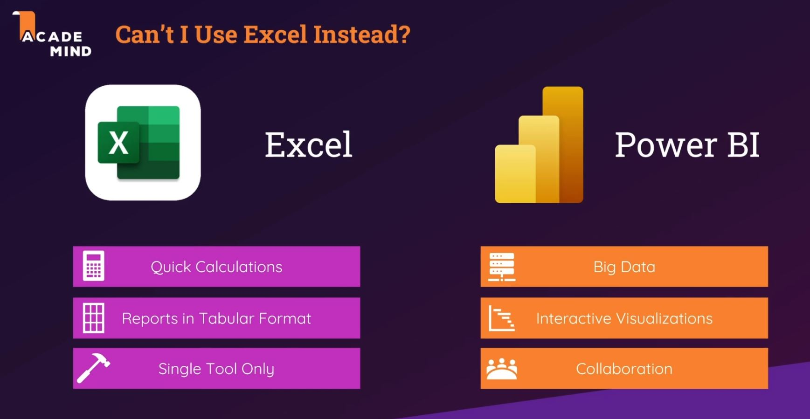

Power BI

Power BI Desktop
- Attached Project Files
- Data source settings
- Power BI Desktop Workflow
- Data Preparation
- Query Editor
- Data Modeling
- Data View
- Relationship View
- Data Visualization
- Report View
- Data Model Interface
- Query Editor Interface
Query Editor
- Connecting Power BI Desktop to Source Files
- Transform Data
- New Source
- Keeping & Removing Rows
- Remove Top Rows
- Table Settings
- Remove Alternate Rows
- Patterns
- Keep Range of Rows
- Use First Row as Headers
- Working with Filters
- Search will exclude those not listed
- Remove Empty Rows
- Can save without applying queries/apply later
- Appending Queries
- Column amount and names must be equal in initial queries
- Working with Columns
- Choose Columns
- Replacing Values
- Formatting Data & Handling Formatting Errors
- Detect Data Type
- Error Query Group, fixed with replace values
- Pivoting and Unpivoting
- Attribute-Value pairing
- Unpivoting - Attribute(Name)-Value become separate columns
- Pivoting - Separate Columns become Attribute(Name)-Value Pairs
- Splitting Columns
- By number of characters, delimiter, positions
- Delimiter is removed
- Creating Groups and Cleaning Up
- Group by folder
- Reorder columns, sorting by column
- Star Schema
- Dim Tables - Multiple
- Products, Time, Customers, Sales Point
- Fact Table
- Sales
- IDs from each Dim Table
- Using Star Schema in Project
- Population-Combined to Fact Population table
- DIM Region
- DIM Age
- Query Duplicates vs References
- Reference depends on Source
- Duplicate copies initial query
- Creating DIM-Region Table and Removing Duplicates
- Reference of population-combined
- Creating Tables Manually
- Edit Source
- Merging Queries
- Column in common
- Join Kind
- Common ID
- Outer Join
- Left, Full, Right
- Anti Join
- Left, Right
- Not found
- Inner Join
- Found in both
- Merging Queries Applied
- Inner Join, select Region Name only in expanded, don't use prefix
- DIM-Age Table
- Age group from population-combined
- Index column from 1
- Understanding "Extract"
- Different in Transform and Add Column ribbons
- Conditional Columns
- If-Else chain
- Creating FACT-Table
- Reference of population-combined utilizing age and country IDs instead
- Basic Math Operations
- Transform (Number Column)
- Performance Optimization
- Enable Load (right-click query)
- Choosing what is loaded in Data Model
Data Model: Data & Relationship View
- Understanding Relationships
- Data Modeling
- Data View
- Relationship View
- Cardinality: Many-to-One & One-To-One
- One-to-Many (1:*)
- Many-to-One (*:1)
- Each Customer unique
- Each Customer can have multiple Orders
- One-to-One
- Passport to Person
- Cross Filter Direction & Many-to-Many
- Connector table, need two to communicate
- Cross filter direction to Both
- Feed info both ways
- Understanding Active Properties
- Deactivate relationship
- New relationships will be inactive by default if one already exists
- M-Language vs DAX (Data Analysis Expressions)
- One Tool - Two Languages
- M
- Description
- Power Query Formula Language
- Data Transformation
- Where to Apply
- Data Preparation
- Before Data Model
- DAX
- Description
- Data Analysis Expression Language
- Analytical Data Calculations
- Comparable to Excel Functions
- Where to Apply
- Create Insights
- In Data Model
- M vs DAX - A Practical Example
- M is logic behind query editor
- Advanced Editor
- Custom columns
- DAX
- Data view > Table Tools > New column
- Using default functions such as Concatenate
- Nesting functions within another
- DAX Basics
- DAX Reference
- Syntax:
Formula = ... - Data Types: String, Number
- Operators: +, -
- Functions:
CONCATENATE() - Advanced
- DAX Statements
- Define, Evaluate, Order By, VAR = DAX Queries
- DAX Syntax - Core Rules
Total Population = SUM(FactPopulation [Population Count])- Formula Name
- Capital Letters
- Space
- SUM is DAX function, parenthesus
- Table Reference
- Capital Letters
- No Space
- Column Reference
- Square Brackets (always required)
- Capital Letters
- No Space
- Supported DAX Data Types
- String (Text)
- Whole & Decimal Numbers
- Boolean
- Date/Time
- Currency
- Blank (NA)
- DAX Operators
- Arithmetic
- +, -, *, /, ^
- Comparison
- =, ==, >, <, >=, <=, <> (not equal)
- Logical
- &&
- ||
- IN (multiple conditions)
- Text concat.
- &
- DAX Core Functions
- Text
CONCATENATE("X, "Y")
- Information
ISNUMBER(2020)(true)
- Logical
IF([Population]>100000, "Big", "Small")
- Math
ROUND(352.867,2)
- Statistical
AVERAGE(Dim-Fact[Population])
- Filter
FILTER(Dim-Fact[Year]=2020)
- Date & Time
CALENDAR(DATE(2000,01,01),DATE(2020,12,31))
- CALENDAR Function
Calendar = CALENDAR(DATE(1990,01,01),DATE(2020,12,31))DateQuarter = [Date].Quarter- Applying DAX Basics
TotalRevenue = [RevenueProductA]+[RevenueProductB]ProfitMargin = 1-(DIVIDE([TotalCost],[TotalRevenue],0))- IF and RELATED
DayRating = IF([ProfitMargin]>0.65,"Good Day","Bad Day")- RELATED has to have relationship
TotalUnitsSold = RELATED(UnitsSold[UnitsSoldProductA])+RELATED(UnitsSold[UnitsSoldProductB])- Calculated Columns vs Measures
- Calculated Column
- Perform an operation that generates results for each row of your table.
- Measure
- Return a single result of a calculation or an aggregated value (e.g. Averages)
- First Measure
TotalPopulation = SUM([Population])AveragePopulation = AVERAGE([Population])- CALCULATE & FILTER
FILTER = (<table>, <filter>)CALCULATE = (<expression>, <filter1>, <filter2>)- Applying CALCULATE and FILTER in Measures
FemalePopulation = FILTER('FACT-Population',[Gender]="Female")- Need aggregation for filter
FemalePopulationFilter = CALCULATE(SUM([Population]),FILTER('FACT-Population',[Gender]="Female"))FemalePopulation = CALCULATE(SUM([Population]),'FACT-Population'[Gender]="Female",'FACT-Population'[Year]=2020)- Creating Measures with Measures
MalePopulationFilter = CALCULATE(SUM([Population]),FILTER('FACT-Population',[Gender]="Male"))- Remove year filter from FemalePopulationFilter
ShareFemalePop = [FemalePopulationFilter]/[TotalPopulation]- Data Category
- Country, Continent, etc
Creating Visuals in the Report View
- Basic Visual Concepts
- Value area
- Population
- Legend
- Country Specific data
- Tooltip
- Age category
- Visuals & Reports
- Data/Drill (discussed later)
- Format
- Align, etc
- View tab
- Positioning, etc
- Visualizations column
- Has different charts, etc
- Elements
- Text, buttons, images
- Creating First Visuals
- Fields column, areas
- Line chart
- Population by Year, Region
- Stacked column chart
- Population by Region
- Tooltips & Interactions
- Add further info
- Hovering over charts for details
- Add ShareFemalePop percentage calculation to tool-tip
- Selecting similar filter, axis affects all charts
- Format > Edit Interactions
- interactions can specify how visuals interact with one another with filtering, highlights
- Filter specifics on top of visual
- Hierarchies & Drill Mode
- Multiple axis
- Sequence of different detail levels for data
- Right click > create hierarchy
- Drill down specific parts of hierarchy
- Activate/Deactivate
- Data Colors & Conditional Formatting
- Format > Data colors
- Different depending on chart
- Conditional, based on sum (f(x) button)
- Formatting Report Pages
- General formatting options when no visuals selected
- Formatting Visuals
- General formatting options when a visual(s) selected
- Format painter to apply formatting from one to another
- Report Themes
- View > Themes
- The Slicer
- Using FACT-Population Year
- Affects other visuals
- Default Summarization & Sorting
- Arrow by value Population, Sum by default
- Sort x-axis
- Treemaps & Tables
- Another Slicer by Region Name
- Another Slicer by Age-Category
- Treemap Population by Country (Details)
- Syncing Slicers
- Prompt on copy
- View > Sync Slicers
- Filter Types (Visual, Page & Report)
- Filter column with no visual selected
- Report level > Filter by year
- Page level > Filter by Region
- Visual level > Top N by Population
- Working with (Multi) Row Cards
- Cards with multiple rows, applying filters, more data
- Combined Visuals & Waterfalls
- Secondary values; adds second y-axis
- Can tailor in formatting
- Combine line and column charts
- Waterfall, category, breakdown, values
- Custom Visuals
- Import, AppSource
Taking Project to the Cloud with Power BI Pro (Service)
- Power BI Pro
- Single User scenario
- Publish to access from other devices
- Organization
- Publish to Power BI pro
- Accessible by others using workspaces
- Service vs. Pro vs. Premium
- Power BI Pro Interface
- Navigation, settings, Apps, Get Data
- Workspaces
- Publish report, datasets, dashboard to your workspace and can share.
- Connecting Power BI Pro & Power BI Desktop
- Sign in to publish
- Get data from local file
- Report and Dataset imported
- Datasets
- Different in course, similar to Power BI Desktop?
- Reports
- Creation additional
- Can create new pbix file based on report created in Power BI Pro
- Dashboards
- Create tiles
- Pin tiles to dashboard
- My Workspace
- Lineage view
- Quick Insights
- Refreshing Data with Gateways
- Personal Gateway for local files
- Standard Gateway for server data
- Data source settings
- Setup gateway
- Refresh and scheduled refresh
- Sharing Data From My Workspace
- Can't share datasets
- Share link, to email
- Access menu
- Read access
- Collaboration Workspaces
- Create New Workspace
- Settings, Access menus in Workspace
- Workspaces vs Apps vs Content Packs
- Apps -> Content Packs
- Share Dataset, Report, Dashboard
- Publishing an App
- Premade apps